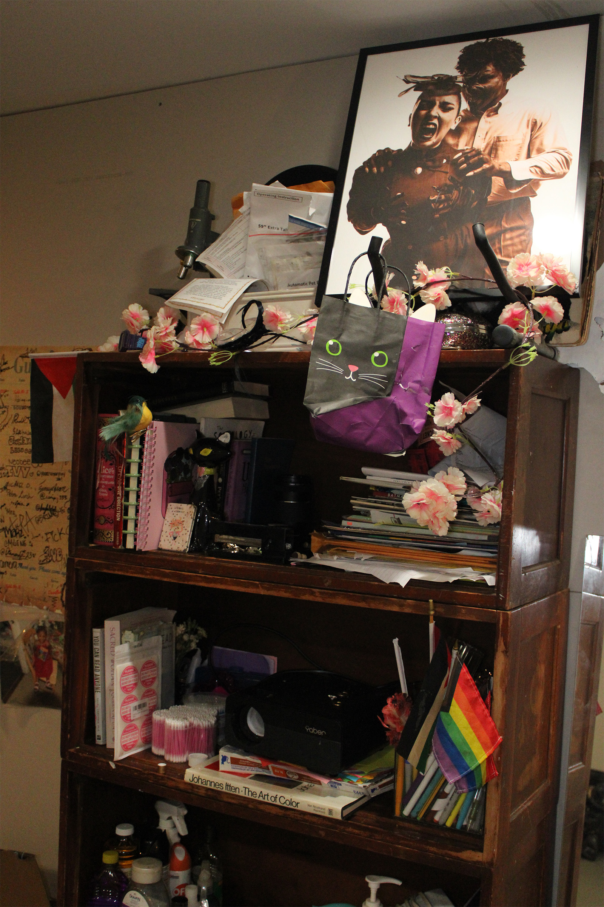
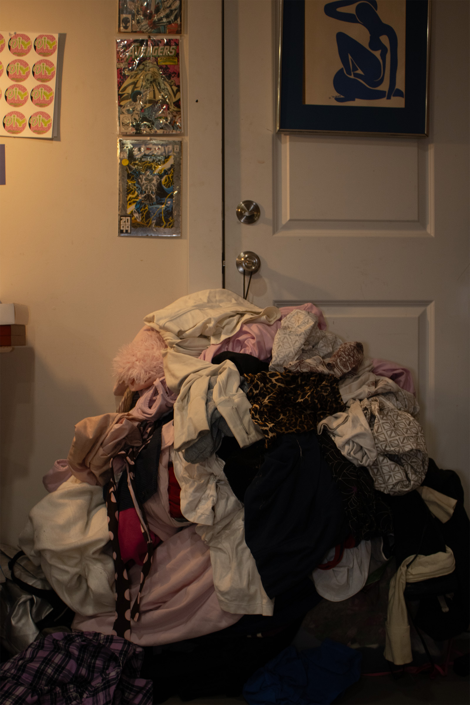
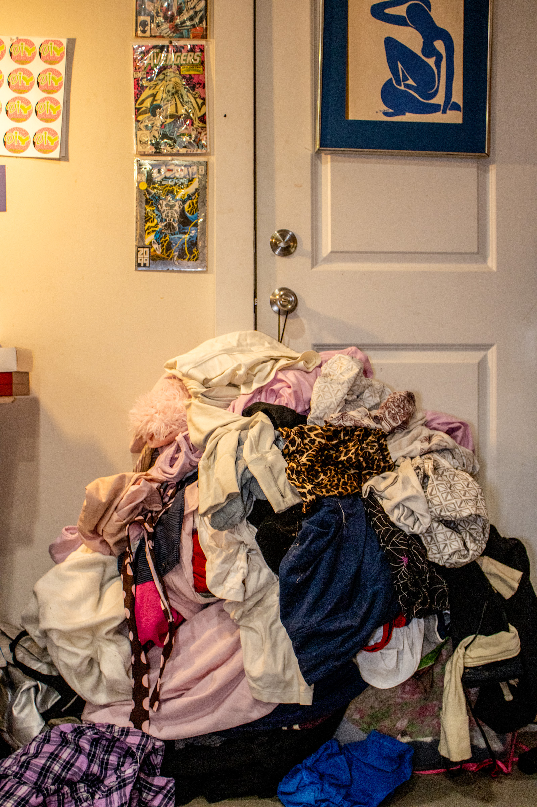
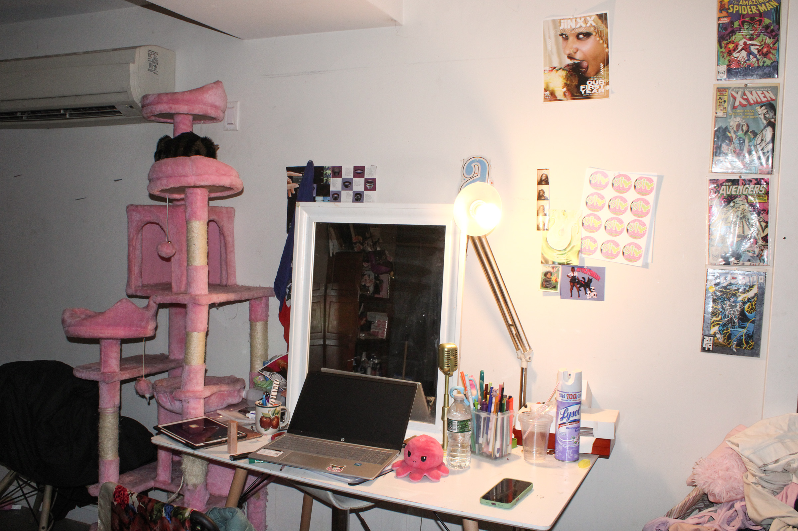

In this assignment, I used Camera Raw to adjust exposure, contrast, highlights, and color balance. The RAW file allowed me to make stronger edits without losing quality, while the JPEG image had less flexibility. This process helped me understand how professional photographers rely on RAW files for better editing control and image quality.